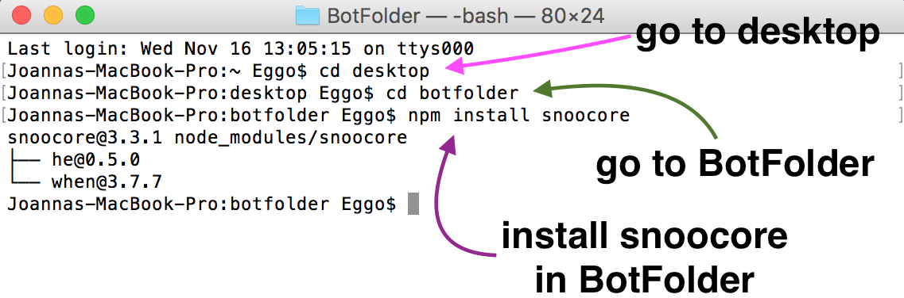
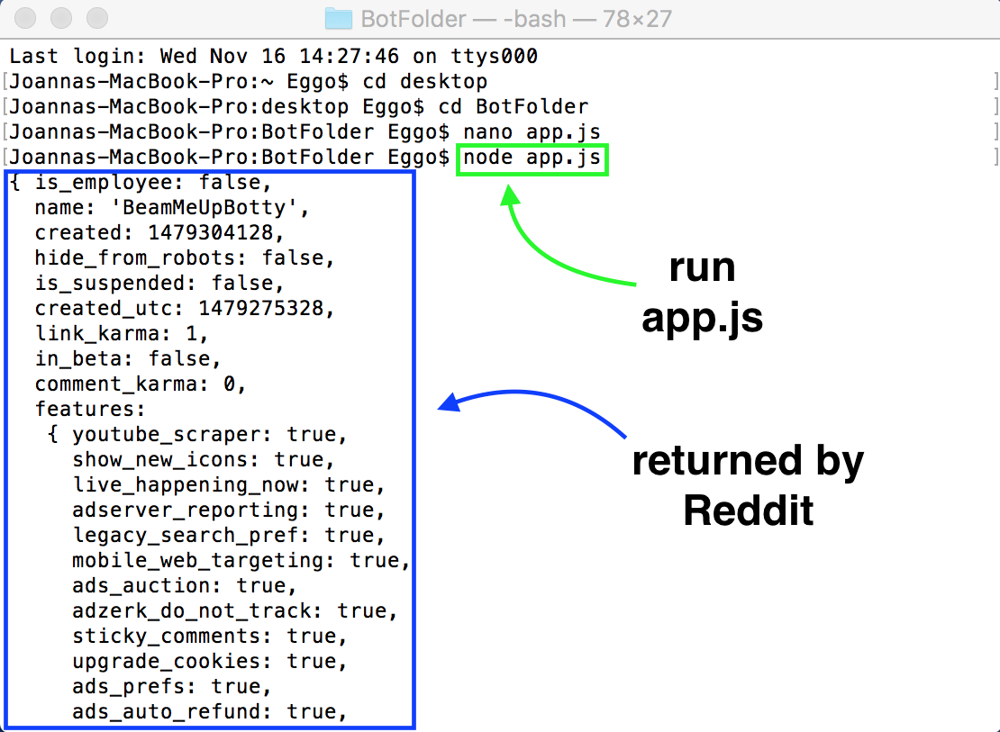

Using the Reddit API
At this point, you're probably thinking, "Hey! This is nifty, but where's the Javascript?" So let's move on to the fun stuff!
Method #2: Using a Wrapper
Wrappers allow for easy access to Reddit's API and make its use much simpler. A list of unofficial clients for Reddit's API can be found here. In this tutorial, we will be using Snoocore, a Node.js Wrapper.
- First, make sure you have Node.js. If you don't, you can download it here.
- Make a directory for your bot. We will call our project directory BotFolder.
- In your directory, install Snoocore by typing
npm install snoocore in Terminal or Command Line.

p
- Make a file named "app.js" in your project directory.
- In the "app.js" file, copy and paste the following code. Put in a name for your userAgent, such as "FuturamaBot by /u/BeamMeUpBotty". Put in your client ID, client secret, Reddit username, and Reddit password. Then, save the file.
- Now, back in Terminal or Command Line, run app.js by typing
node app.js.

p
We now have all the information about our account, just like what we got using Terminal. But enough with the account information. Let's actually do something and write some code.
p
« Previous
Next »